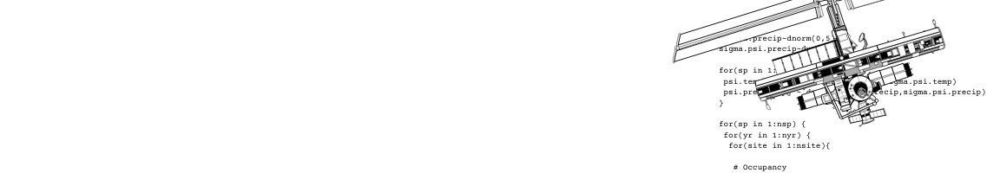

Our Data and Code
You can use the search function below to look for repositories which contain relevant data and code.
-
Reconstructing 50 years of morphological change in the cold-adapted butterfly Parnassius smintheus. | Shirey et al. 2023
Zenodo/DataDryad | GitHub
Tags: butterflies, lepidoptera, climate change, color, morphology, photography -
Northern European Spiders and Climate Change | Shirey and Cardoso 2023
Zenodo/DataDryad | GitHub
Tags: spiders, arachnids, climate change, europe -
High-latitude North American Butterflies and Climate Change | Shirey et al. 2022
Zenodo/DataDryad | GitHub
Tags: butterflies, lepidoptera, climate change, north america, canada, arctic, boreal -
LepTraits v1.0: A Globally Comprehensive Dataset of Butterfly Traits | Shirey et al. 2022
FigShare | GitHub
Tags: butterflies, lepidoptera, traits, global -
North American Butterfly Occurrence Data Bias | Shirey et al. 2021
Zenodo | GitHub
Tags: butterflies, lepidoptera, traits, global